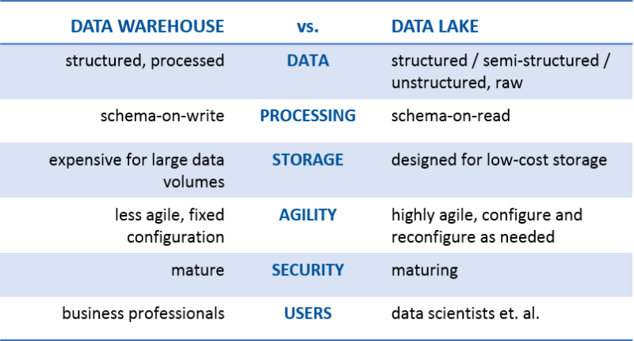
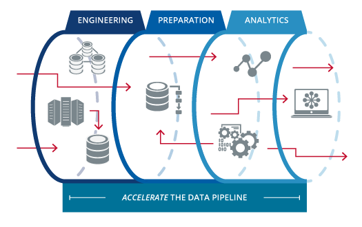

Building a Self-Service Data Pipeline with Apache Spark
Andrew Grangaard
Created: 2018-03-10 Sat 11:42
We’re Helping People Find Great Jobs,
and Helping Employers Build Great Companies
- Scrappy, Data Driven, Experimental
- Crawl, Walk, Run!
- Explosive Growth
Business Goal:
Support Data Driven decision Making
- Collect All the data
- Ad-hoc Analysis for Insight
- Aggegrate for Reporting
- Support business experiments
- Improve MTTIT - Mean Time to Idea Tested
Data Core: Team Goal
Scalability of 100x with current team size
What does that Mean ?
- Redshift DB can't handle 100x of raw data
- Stop loading raw data into Redshift DB!
- Generate aggregates and roll-ups outside of Redshift
- Load converted data to Redshift
- Provide access to raw data for ad-hoc analysis
Build a Self-Service Streaming Data Platform to Support 20+ dev teams at 100x current usage
Build a Self-Service Streaming Data Platform to Support 20+ dev teams at 100x current usage
Build a Self-Service Streaming Data Platform to Support 20+ dev teams at 100x current usage
Build a Self-Service Streaming Data Platform to Support One dev team at 100x current usage
Build a Self-Service Streaming Data Platform to Support One Data team at 100x current usage
Definitions:
- OLTP vs OLAP
- Data Warehouse
- ETL
- Data Lake
- Technologies
OLTP vs OLAP
- On-Line Transaction Processing
- Primary Database
- High number of transactions
- Insert / Update / Delete
- Powers primary application
- On-Line Analytical Processing
- Aggregated data
- Complex Queries
- Long running queries
- Powers reporting
Data Warehouse
An OLAP database used for reporting.
ETL
Extract - Transform - Load
ETL
- Extract
- pull data from sources and convert to standardized format
- Transform
- apply business rules and clean
- Load
- Load into data warehouse for reporting
- Generate roll-ups with SQL
- Run regular and ad-hoc reports against roll-ups
Data Lake
Artisanal and Unfiltered

Data Pipeline
System to collect, clean, query, aggregate and publish data from source to analytic consumer.

Technologies
Mapping of Open Source and Amazon products
| Open Source | Amazon Product | Description |
|---|---|---|
| Presto | Athena | Distributed SQL Query Engine |
| Redshift Spectrum | Run Redshift queries against S3 | |
| Kafka | Kinesis | Distributed Streaming Platform |
| Ceph, etc | S3 | Extensible object/file store |
Technologies [cont]
| Open Source | Amazon Product | Description |
|---|---|---|
| Apache Spark | Engine for large-scale data processing. | |
| Apache Spark SQL | module for working with structured data. | |
| Apache Airflow | workflow platform | |
| Hive Metastore | AWS Glue Data Catalog | central repository to store structural and operational metadata for all your data assets |
System Diagrams
Where we were
Scaling limit: Raw log data overwhelmed primary database
Where we are
Scaling limit: Raw log data overwhelmed primary database + Cron management
Where we're going
Scaling limit: ?
Data Pipeline Pieces
- Ingres
- Storage
- Data Formats
- Queries
- Meta data
- Workflow
- Scheduling
Ingres: JSON + Kafka
- All logs generated as json lines
- Logs are tailed and published to Kafka
- Hourly Buckets by type from Kafka stream

Storage: S3
- Raw logs are source-of-truth for system
- Raw logs are stored in a production-logs bucket
- Structured path
datatype/yyyy/mm/dd/... - Encrypted S3 bucket

Data Formats
- json lines for all logs
- Apache parquet for derived sources
Queries: Spark and SparkSQL
- Spark: Scala and python
- SparkSQL: SQL queries over JDBC
- Athena: Interactive queries from AWS console

Metastore: AWS Glue Data Catalog
- hive-compatible metadata
- Works across SparkSQL, Athena and Spectrum
- Daily partition metadata added by cron job.

Workflow
Luigi vs Azkaban vs Oozie vs Airflow
- Luigi
- python, Spotify, code-based DAG
- Azkaban
- java, LinkedIn, GUI, hadoop only, time-based scheduling
- Oozie
- Airflow
- python, AirBNB, code-based + GUI,
https://www.bizety.com/2017/06/05/open-source-data-pipeline-luigi-vs-azkaban-vs-oozie-vs-airflow/
Airflow
Scheduling - Jenkins
- Automatic and manual triggers
- Compile sources for a workflow into binary artifacts
- Launch transient EMR cluster to run job

Status

QUESTIONS?
Contact:
| @spazm | |
| andrew.grangaard+scale2018@gmail.com | |
| Blog | spaz.rocks |

EXTRA
What?
- aggregation of raw data
- storage of raw data
- cleaning of data
Summary
I’ll share the architecture we design based on the trade-offs we considered and the choices we’ve made.
Building a data pipeline for stats and analysis is a big job. We have a cornucopia of open source tools to choose from and so many decisions to make regarding:
Tools orchestration storage formats streaming compute SQL integration data ingress, egress job vetting data integrity